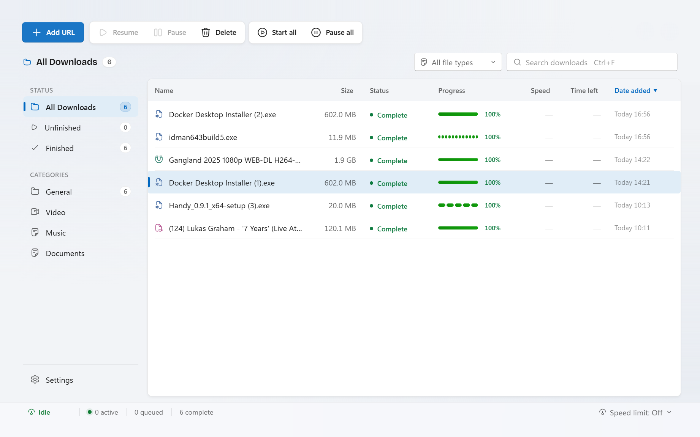
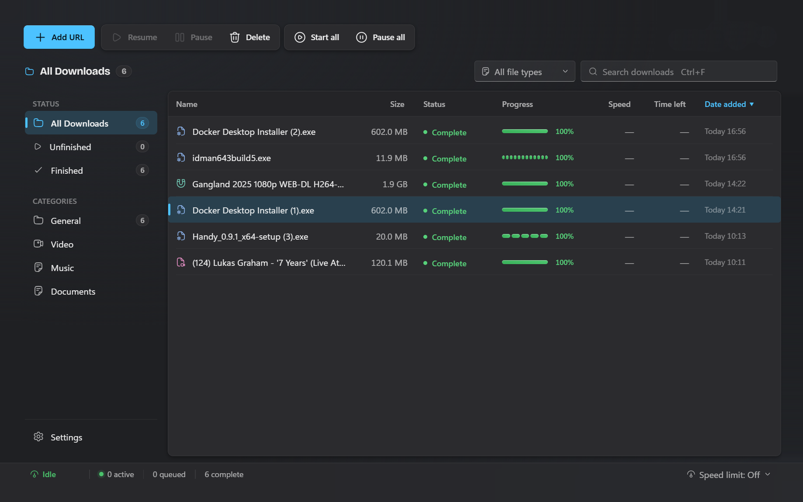

Genuinely fast
Each file is split into up to 32 parallel connections and reassembled — bit-for-bit identical, just finished sooner.
Rivlet splits every file across many connections, so downloads finish in a fraction of the time. Fast like IDM — without the interface from 2005.
Windows 10 & 11 · Completely free · No account required

Each file is split into up to 32 parallel connections and reassembled — bit-for-bit identical, just finished sooner.
A clean Windows 11 app with real light and dark themes. Browser capture, clipboard monitoring, categories and resume all included.
Queues, schedules, custom proxies, saved logins and full-resolution video are available to everyone, forever.
Rivlet keeps the multi-connection speed you rely on and drops everything that makes IDM feel dated.
There is no Pro plan, no checkout, and no feature gate. Download Rivlet and use the complete app on your Windows PC.
Yes. Every feature is available to every user. There are no subscriptions, purchases, upgrades, ads, or required accounts.
Rivlet opens several connections to a compatible server and downloads separate parts of a file at once, then safely reassembles them.
Yes. Install the included extension once and Rivlet can take over supported downloads automatically.
Use Rivlet for files and media you have the right to download. Please respect site terms and applicable copyright law.
The speed you loved about IDM, in an app built for Windows today.
Download for Windows Free